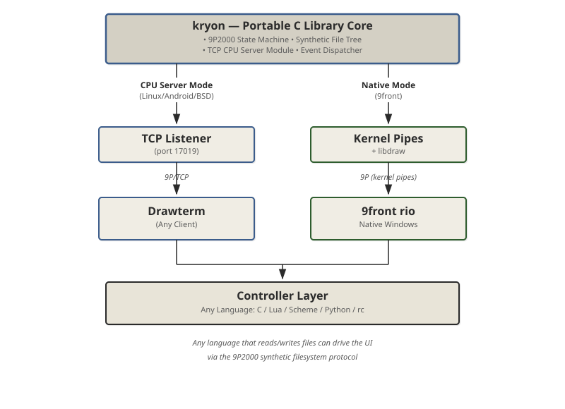

Open-source software inspired by Plan 9
Kryon Labs develops open-source software inspired by the Plan 9 operating system philosophy. We believe that everything is a file — and that simple, composable protocols like 9P enable elegant distributed computing.
Our mission is to bring Plan 9's core ideas — the 9P protocol, synthetic filesystems, and namespace-based isolation — to modern systems. We build portable libraries, window managers, emulators, and applications that embrace "the Unix way" taken to its logical conclusion.
Portable distributed kernel with 9P2000 server, authentication, service registry, CPU server, and graphics devices.
Plan 9-style window manager using bind mount namespaces for per-window isolation. Synthetic UI filesystem.
Plan 9 compatibility library from Inferno OS. String formatting, Unicode, 9P protocol, directory operations.
Native UXN emulator for Plan 9. Implements the core UXN virtual machine and system devices.
Lua 5.4 for Plan 9 with p9 system interface. Statically linked, complete Plan 9 integration.
Binaural beats generator, habits tracker, and more. Demonstrations of Kryon UI capabilities.
Marrow is a headless 9P-compatible kernel providing authentication, service registry, CPU server, and graphics devices. Marrow serves as the substrate for distributed Plan 9 computing on modern systems.
Marrow provides a portable 9P2000 kernel that runs on Linux and other POSIX systems. It serves as the foundation for network-transparent Plan 9 computing, allowing clients like drawterm to connect from any operating system.
# Build and run Marrow
$ make
$ ./marrow --port 17011
# Connect with drawterm
$ drawterm -h localhost -a tcp!localhost!17011Marrow includes a built-in service registry that allows dynamic registration and discovery of network services:
# Register a service
$ echo "register myservice display" | 9p write tcp!localhost!17011/svc/ctl
# List available services
$ 9p read tcp!localhost!17011/svc/discoverKryon is a window manager that follows Plan 9's philosophy of separating the display server from window management. It uses Marrow as the display server and implements rio-style namespaces where each window can have its own isolated /dev devices through bind mounts.
Kryon implements a complete synthetic UI filesystem using the 9P2000 protocol. The entire interface is a tree of files — every widget is a directory, every property is a file, every event is a file read. This "Synthetic UI" approach enables universal deployment through a simple, elegant interface.
Three core principles define Kryon:
Each window gets its own namespace where /dev/screen points to that window's virtual devices through bind mounts, just like Plan 9's rio. This allows:
Kryon operates in two distinct modes while using the same core library:

CPU Server Mode: Run kryon on Linux/Android/BSD with a TCP listener. Drawterm clients connect remotely for network-transparent sessions.
Native Mode: Run kryon on 9front with kernel pipes. Integrates directly with rio window management and native graphics.
A complete "Hello Kryon" app demonstrating the synthetic filesystem approach. The same code runs on both modes — CPU Server or Native:
-- controller.lua — Direct 9P filesystem interaction
local kryon = require("kryon")
# Mount the synthetic UI filesystem
kryon.mount("/mnt/kryon")
local count = 0
# Create a simple window with label and button
kryon.write("/mnt/kryon/windows/main/title", "Greeting App")
# Add widgets as directory/file operations
kryon.mkdir("/mnt/kryon/widgets/greeting")
kryon.write("/mnt/kryon/widgets/greeting/type", "label")
kryon.write("/mnt/kryon/widgets/greeting/text", "Awaiting input...")
# Watch for events via file reads
while true do
local event = kryon.read("/mnt/kryon/events")
if event.widget == "submit_btn" then
count = count + 1
kryon.write("/mnt/kryon/widgets/greeting/text",
"Hello, " .. event.value .. "!")
end
endCPU Server Mode (Linux/Android/BSD): Run kryon with TCP listener for remote Drawterm connections:
# Build and start the CPU server
$ gcc -o kryon kryon.c
$ ./kryon --cpu-server --port 17019
$ # Server now listening for Drawterm connections
# Connect from Drawterm on any machine
$ drawterm -h kryon.example.com -a 17019Native Mode (9front): Use 9kry wrapper for authentic Plan 9 integration:
# Mount the kryon filesystem
; 9kry -m /mnt/kryon &
# Run your controller (speaks 9P to /mnt/kryon)
; lua controller.luaKryon Labs maintains and ports essential libraries that enable Plan 9 software to run on modern systems.
lib9 provides Plan 9 C library functions adapted from Inferno OS. It enables programs using Plan 9 conventions to compile and run on modern POSIX systems (Linux, BSD, macOS).
$ mk # Build liblib9.a
$ mk install # Install to $ROOT/lib
$ mk clean # Clean build artifactsuxn9 is a native UXN emulator for Plan 9front. UXN is a virtual computer designed for creating portable graphical applications.
; mk
; mk install
; uxn9 [-S] [-f targetfps] file.romlu9 is a native Plan 9 port of the Lua 5.4 library featuring a complete Plan 9 system library, a simplified standalone interpreter, and LPeg pattern matching.
; mk installKryon Labs develops applications that demonstrate the capabilities of our platform and provide practical tools for daily use.
A professional-grade binaural beats generator implementing Gnaural-compatible audio algorithms in Lua for Kryon. Generate audio for meditation, focus, sleep, and more using JSON schedule files.
A calendar-based habit tracking application that demonstrates Kryon's UI capabilities. Track daily habits with color-coded calendar views and persistent data storage.
All habit data is stored as simple text files following Plan 9 conventions:
data/count # Number of habits: "3\n"
data/0/name # Habit name: "Exercise\n"
data/0/color # Color: "#4a90e2\n"
data/0/log # Completion dates: "2026-03-01\n2026-03-03\n"
data/1/... # Additional habits